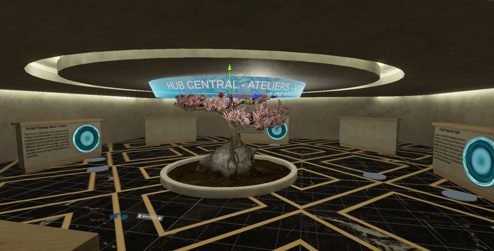
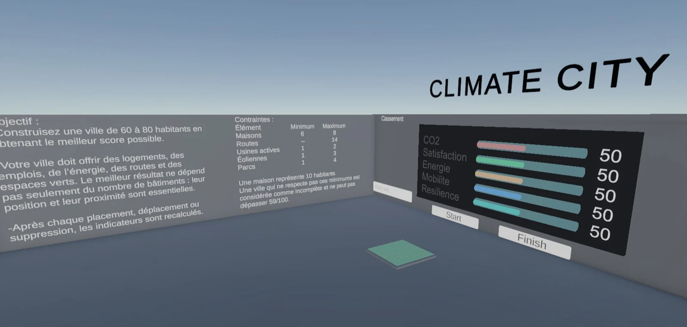
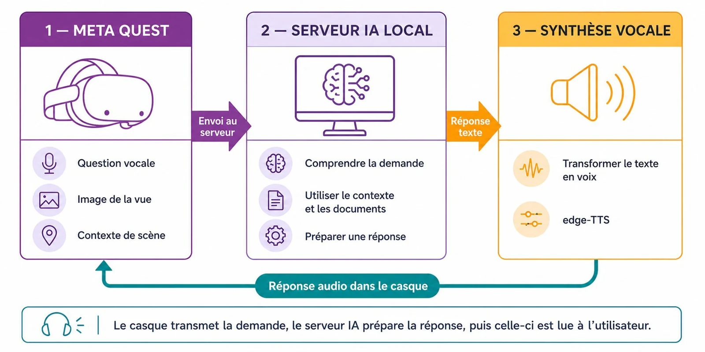
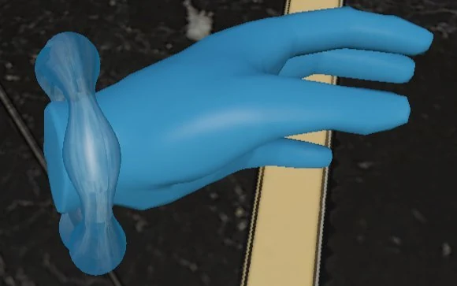
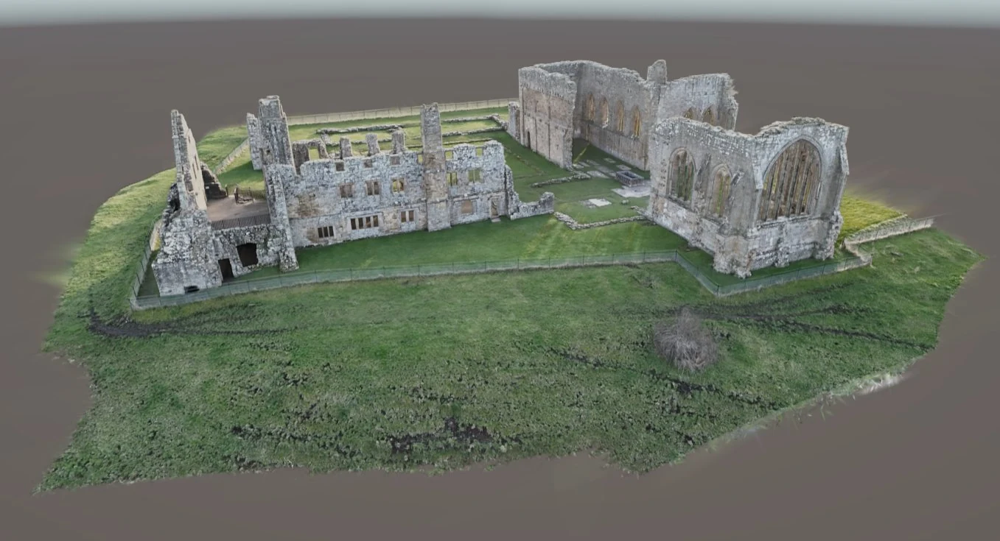

LIRMM · ÉQUIPE ADVANSE · STAGE DE FIN D’ÉTUDES
Concevoir une expérience VR accompagnée par l’IA.
Un prototype éducatif qui relie immersion, exploration 3D et construction d’une ville durable, avec un assistant vocal pour accompagner l’utilisateur.
- Durée & cadre
- 6 mois · Master MTI3D · 2025–2026
- Contribution
- Conception · Développement · Intégration
- Technologies
- Unity 6 · Meta Quest · FastAPI · IA
Le projet en bref.
- Le besoin
- Rendre des phénomènes environnementaux compréhensibles grâce à un parcours immersif associant observation, expérimentation et dialogue.
- Mon rôle
- Concevoir et développer le prototype Unity pour Meta Quest, relier les ateliers à un assistant vocal IA et mener une pré-étude d’utilisabilité.
- Le résultat
- Un prototype réunissant hub, ateliers et assistant ; dix participants à la pré-étude, avec un score SUS moyen de 76,5/100. L’efficacité pédagogique reste à évaluer.

Le contexte du stage
J’ai réalisé ce stage de six mois au Laboratoire d’Informatique, de Robotique et de Microélectronique de Montpellier (LIRMM), au sein de l’équipe ADVANSE, dans le cadre du Master Management des Technologies Interactives 3D. Le sujet associait réalité virtuelle, interaction humain-machine et intelligence artificielle. L’enjeu était de concevoir un système d’aide capable d’accompagner l’utilisateur au cours d’une expérience immersive, en tenant compte de ce qu’il fait et de l’environnement dans lequel il se trouve.
Le projet a évolué pendant le stage. Initialement orienté vers la découverte des milieux karstiques, il a pris la forme d’une application consacrée à la transition écologique. Les explorations techniques menées sur les vidéos immersives et le Gaussian Splatting ont été réutilisées dans un parcours plus large : découvrir un sujet, explorer un environnement, puis mettre ses connaissances en pratique. Cette évolution a demandé de repenser l’organisation de l’application tout en conservant les briques déjà développées.
Ma contribution, de la conception au prototype
J’ai conçu et développé le prototype à partir d’une base inexistante, en reliant plusieurs modules au sein d’une même application Unity. Le travail ne se limitait pas à produire une scène VR : il fallait organiser les déplacements, rendre les commandes compréhensibles, construire un atelier interactif, intégrer un assistant vocal et faire communiquer le casque avec un serveur de traitement. Les contenus et modèles intégrés servent de supports à l’expérience ; ma contribution porte sur leur intégration, l’architecture du parcours et le développement de ses interactions.
- Conception : organisation du parcours pédagogique, articulation des ateliers et définition des échanges avec l’assistant.
- Développement VR : hub, portails, lecteur de vidéos immersives et interactions de Climate City sous Unity 6.
- Intégration technique : visualisation par Gaussian Splatting sur Meta Quest et liaison avec le serveur IA.
- Démarche de recherche : état de l’art, formalisation des hypothèses, documentation et pré-étude de l’utilisabilité auprès de dix participants.
Un hub pour relier les expériences
Le hub constitue le point de départ du parcours. Ses portails donnent accès aux différents espaces et ateliers, avec un fonctionnement commun qui permet d’ajouter de nouvelles destinations. Des zones décrivent le salon central, l’aquarium et l’espace vidéo : cette information peut être transmise à l’assistant pour situer ses réponses. La navigation fait ainsi le lien entre l’organisation de l’espace et le contexte nécessaire à l’accompagnement.
Trois formes d’apprentissage se complètent. Les capsules à 180° ou 360° permettent d’observer une scène filmée ; le Gaussian Splatting donne accès à une représentation 3D d’un lieu réel ; Climate City demande d’agir et de comparer les conséquences de ses choix. Le lecteur immersif comprend la lecture, la pause, le déplacement dans la vidéo et le retour au hub. Les capsules présentes dans le prototype sont des contenus de démonstration : leur intégration au parcours écologique final restait à compléter.
- DécouvrirObserver un sujet à travers une capsule immersive.
- ExplorerChanger de point de vue dans une représentation 3D.
- ExpérimenterConstruire une ville et comprendre ses compromis.
Climate City : apprendre en faisant des choix
Climate City est l’atelier interactif central du prototype. L’utilisateur construit une ville sur une grille de 8 × 8 cases en sélectionnant des maisons, des routes, des éoliennes, des usines et des parcs. Un aperçu coloré indique si le placement est possible, s’il remplace un élément existant ou s’il est refusé. Les objets peuvent être tournés, déplacés et supprimés, ce qui permet de tester une organisation puis de la corriger.
Chaque modification entraîne un nouveau calcul des indicateurs : CO₂, satisfaction, énergie, mobilité et résilience. Le système prend en compte les connexions routières, l’accès aux usines, l’équilibre entre production et demande d’énergie, ainsi que la proximité des espaces verts. Il ne suffit donc pas d’ajouter des bâtiments : leurs relations spatiales comptent. Par exemple, une usine peut contribuer à l’activité de la ville tout en pénalisant son bilan écologique ou le confort des maisons voisines.
La validation vérifie également des conditions de construction afin qu’une moyenne élevée ne masque pas une ville incomplète. Le score et le détail des indicateurs donnent un retour sur l’essai, et un classement local permet de comparer plusieurs configurations. Ces valeurs constituent un modèle pédagogique simplifié ; elles ne représentent pas les émissions réelles d’une ville. Leur rôle est de rendre les compromis visibles et discutables.

Un assistant vocal relié au contexte
L’assistant prend la forme d’un bracelet d’eau visible au poignet. Ses états signalent la prise en compte d’une demande et la lecture de la réponse, sans ajouter un personnage qui occuperait l’espace. L’utilisateur maintient le bouton X du contrôleur gauche pour enregistrer une question. Une fois l’enregistrement terminé, la demande est transcrite, complétée par le contexte disponible, puis envoyée au modèle de langage. La réponse est ensuite lue dans le casque.
Un second échange part d’une capture de la vue affichée dans Unity, déclenchée avec le bouton Y. Le modèle peut en produire une description. Le contexte peut aussi inclure la zone traversée, un objet décrit dans l’axe de la caméra et des extraits d’une base documentaire. Cette capture correspond à la vue du casque, pas à un suivi des yeux. Dans la version documentée, toutes les descriptions d’objets n’étaient pas encore renseignées et les jauges de Climate City n’étaient pas transmises au dialogue.

L’architecture sépare l’application immersive et les traitements IA. Unity gère les scènes et les interactions ; un serveur FastAPI, sur un ordinateur du même réseau, prend en charge la transcription, le modèle de langage et l’analyse d’image. La synthèse vocale repose encore sur le service en ligne edge-TTS : la chaîne complète nécessite donc une connexion à Internet. Cette séparation permet de faire évoluer les traitements sans imposer leur exécution au casque autonome.

Adapter le rendu à un casque autonome
Le Gaussian Splatting permet d’explorer une représentation issue de prises de vue réelles. Son intégration sur Meta Quest impose toutefois de trouver un équilibre entre richesse visuelle et coût de rendu. Trois niveaux de détail ont été importés ; la scène documentée utilise la version d’environ 159 000 gaussiennes, la plus légère des trois. Le travail d’intégration adapte également le rendu aux deux vues du casque et réduit la fréquence de certaines opérations de tri.
Une représentation par Gaussian Splatting ne fournit pas automatiquement des collisions ni des objets identifiés comme dans une scène Unity classique. Il faut ajouter les éléments nécessaires aux déplacements et décrire les zones utiles à l’assistant. Ce travail m’a confronté à des contraintes qui dépassent l’apparence d’un modèle : rendre une scène explorable, maintenir une interaction compréhensible et préparer les mesures de performance. La cible de fluidité indiquée dans le rapport restait à vérifier par des relevés sur le casque.

Une pré-étude auprès de dix participants
Une première série de tests a été menée auprès de dix participants pour évaluer la prise en main du prototype. Après avoir découvert les modules dans le casque, les participants ont répondu au questionnaire SUS (System Usability Scale), qui mesure l’utilisabilité perçue de l’ensemble de l’application. Cette pré-étude a permis de recueillir de premiers retours et de préparer une évaluation plus approfondie, alors que le prototype devait encore être stabilisé.
- Participants à la pré-étude
- 10
- Score SUS moyen
- 76,5 / 100
Les scores vont de 62,5 à 90 sur 100. Les réponses mettent en avant la facilité d’utilisation et l’intégration des fonctions, tout en signalant des réserves sur le besoin d’une aide technique et le caractère contraignant de certaines manipulations. Ces observations donnent des pistes pour accompagner la découverte des commandes et améliorer la prise en main. Le score SUS est un indicateur d’utilisabilité perçue, pas un pourcentage de réussite ni une mesure des connaissances acquises.
L’évaluation de l’apprentissage demande des mesures complémentaires : comparer les connaissances avant et après le parcours, demander à l’utilisateur de justifier ses choix dans Climate City et comparer une version avec assistant à une version sans assistant. Ces perspectives distinguent la facilité d’utilisation, la compréhension des contenus et l’apport propre de l’IA. La pré-étude constitue une première étape pour guider la suite du projet ; l’efficacité pédagogique du dispositif reste à évaluer.
Six mois pour relier conception, développement et recherche
Le stage a abouti à une base fonctionnelle réunissant un hub, des capsules immersives, une scène de Gaussian Splatting, Climate City et un assistant vocal. Le résultat principal est leur articulation dans un même parcours, de l’observation à l’expérimentation. Le projet m’a permis de travailler sur la conception d’une expérience complète, les interactions en réalité virtuelle, la communication entre une application et un serveur, ainsi que les contraintes d’intégration sur un casque autonome.
Les suites identifiées concernent la cohérence des contenus écologiques, l’enrichissement du contexte fourni à l’assistant, la mesure des performances et une évaluation pédagogique plus approfondie auprès d’utilisateurs. Ce projet illustre ma capacité à faire évoluer un sujet de recherche vers un prototype documenté, en reliant les choix d’expérience aux contraintes techniques. Il occupe une place importante dans mon parcours par sa durée et par la diversité des compétences mobilisées.